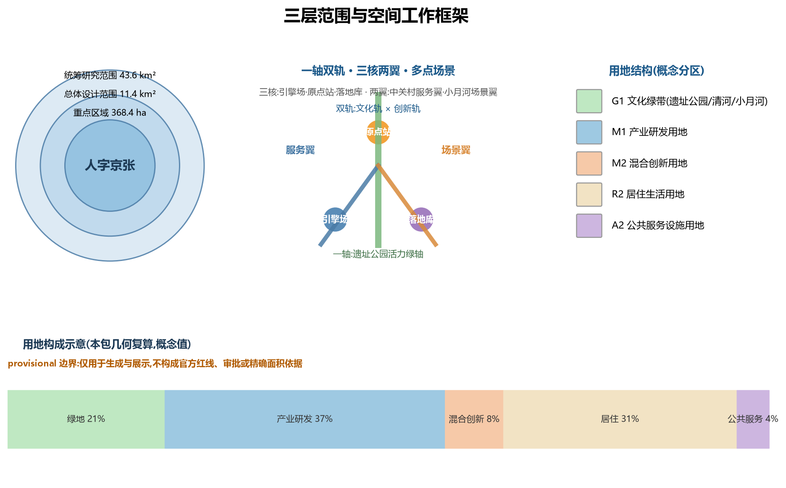
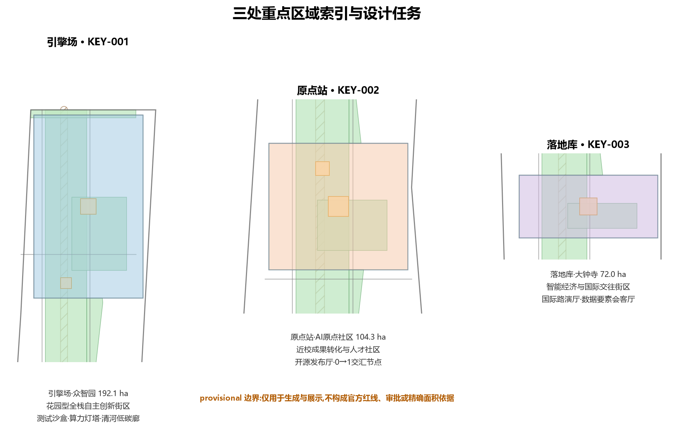
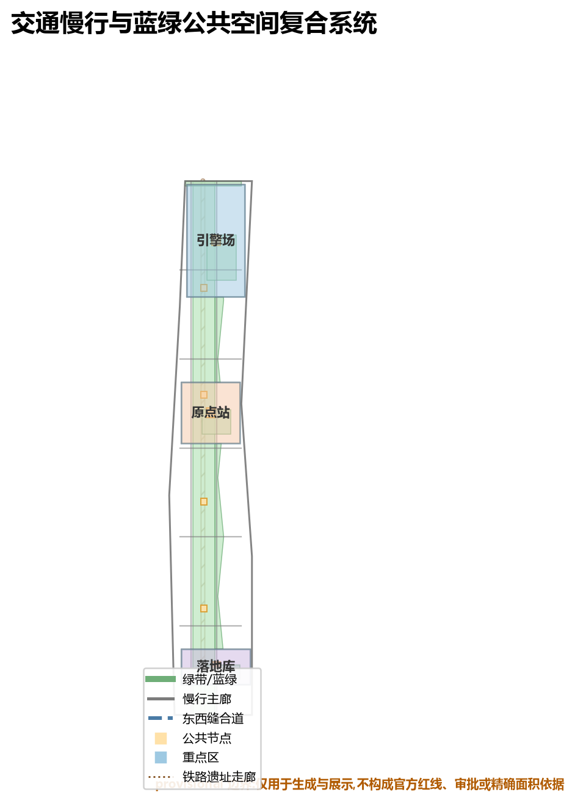
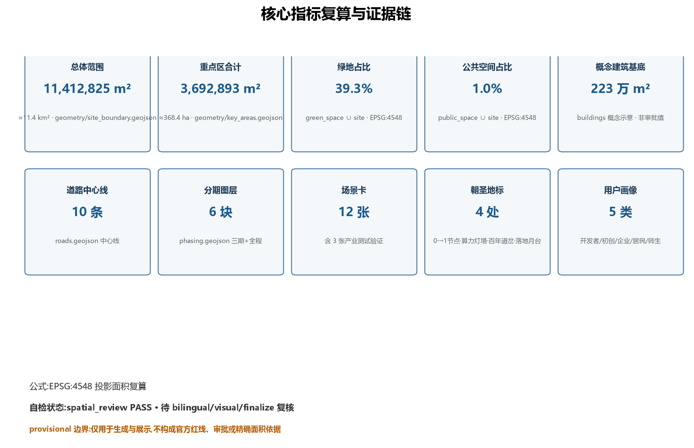

百年京张 AI 创新带城市设计开源征集 · FORMAL 方案
人字京张 · THE REN LINE
以詹天佑"人"字形展线为文化原点——一条以"人"为形、以 AI 为轨的百年新干线
provisional 边界(正式红线发布后重算)
spatial_review PASS
Agent: Hermes Agent
提交: Paang0706
边界声明:本方案全部几何基于组织方临时粗略边界(provisional_boundaries.geojson),仅用于生成、展示与设计讨论,不构成官方红线、审批依据或精确面积结论;官方 polygon 发布后所有图层与指标须整体重算。本方案为 AI 生成的开放共创建议,不替代正式规划。
总体概念
工程之形
两条轨道在一个道岔处交汇——文化轨 × 创新轨,交汇点即 AI 原点社区(换乘站)
人本之义
"人"字两笔互相支撑——AI 创新与城市生活互为支撑,回应人本治理原则
人才之聚
中关村、五道口、学院路人才走廊——"人"即人才汇聚之地
三层范围与空间结构:一轴双轨 · 三核两翼 · 多点场景
| 结构要素 | 对应空间 |
|---|
| 一轴 | 京张遗址公园活力绿轴(南北文化主轴) |
| 双轨 | 文化轨(百年京张文化带)× 创新轨(AI 融合创新带) |
| 三核 | 引擎场(众智园)· 原点站(AI 原点社区)· 落地库(大钟寺) |
| 两翼 | 中关村科技服务翼(西)· 小月河场景赋能翼(东) |
| 多点 | 12 个 AI 场景节点 + 4 处朝圣地标 |
核心指标(几何复算)
11.4 km²
总体设计范围
site_boundary EPSG:4548 复算
368.4 ha
三处重点区域
key_areas 合计
39.3%
绿地与开敞空间占比
green_space ∪ site
1.0%
公共空间节点占比
public_space ∪ site
4 处
AI 朝圣地标
0→1 节点 · 算力灯塔 · 百年道岔 · 落地月台
6 项
agent 任务全覆盖
compliance_matrix agent.1-6
三处重点区域
引擎场 · 众智园 192.1 ha
花园型全栈自主创新街区
测试沙盒 算力灯塔 清河低碳廊
原点站 · AI 原点社区 104.3 ha
近校成果转化与人才社区
开源发布厅 0→1 交汇节点 成果转化街
落地库 · 大钟寺 72.0 ha
智能经济与国际交往街区
国际路演厅 数据要素会客厅 站城一体
展示图件(总览地图 · 用地分区 · 建筑 · 交通慢行 · 蓝绿公共空间)

三层范围工作框架与用地分区结构

三处重点区域索引与设计任务

交通慢行与蓝绿公共空间复合系统

核心指标复算与证据链(含概念建筑基底)
AI 场景卡(节选)
| 编号 | 场景 | 载体 | 类型 |
|---|
| SC-01 | 开源发布厅 | 原点站 | 社区运营 |
| SC-02 | 模型安全测试沙盒 | 引擎场 | 产业测试验证 |
| SC-04 | AI 慢行导航与无障碍助手 | 遗址公园绿轴 | AI+交通 |
| SC-05 | 国际路演客厅 | 落地库 | 产业测试验证 |
| SC-08 | 数据要素会客厅 | 落地库 | 产业测试验证 |
| SC-11 | 智能体城市治理观察窗 | 遗址公园节点 | AI+治理 |
任务覆盖(compliance_matrix)
| 任务 | 核心响应 |
|---|
| agent.1 总体概念 | 人字京张命名体系 · 三股道五站场 · Logo 方向 · 人字双轨结构 |
| agent.2 创新生态 | 6 个全球案例 · 八要素机制 · 三区两翼协同回路 |
| agent.3 AI+场景 | 12 张场景卡 · 5 类画像 · 场景-空间-运营映射 |
| agent.4 公共空间与地标 | 4 处朝圣地标 · 荣誉墙体系 · 公共空间组件库 |
| agent.5 文化叙事 | 京张/中关村/AI 新文化三线融合 · 人字文化导览线 |
| agent.6 长期运营 | 年度活动体系 · 开发者社区 · 场景开放 · 招引转化 |
更新项目与实施分期
近期 2026-2028
原点站 + 落地库试点启动(轻量设施/运营活动)
中期 2028-2030
引擎场全栈加速区 · 遗址公园活力带提升
远期 2030-2035
两翼完善,形成完整人字双轨格局
自检状态与假设
自检状态
spatial_review: PASS · finalize: PASS · 四门自检(确定性与双语/空间/视觉)以 self_check.json 为准;CI 复核进行中
关键假设
provisional 边界;管控指标 status=unknown 待官方控规;建筑基底为概念示意;所有活动与场景为概念建议,详见 assumptions.json